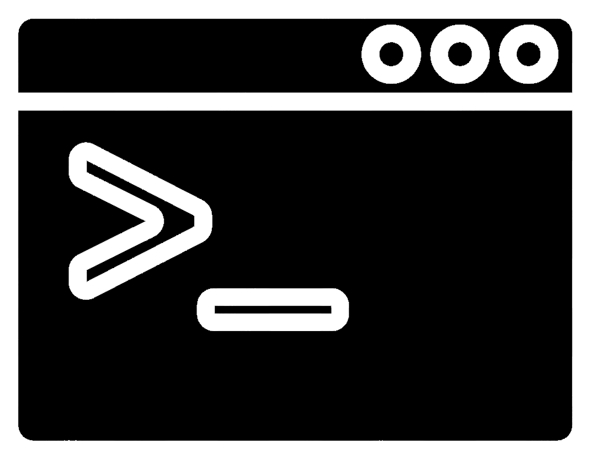
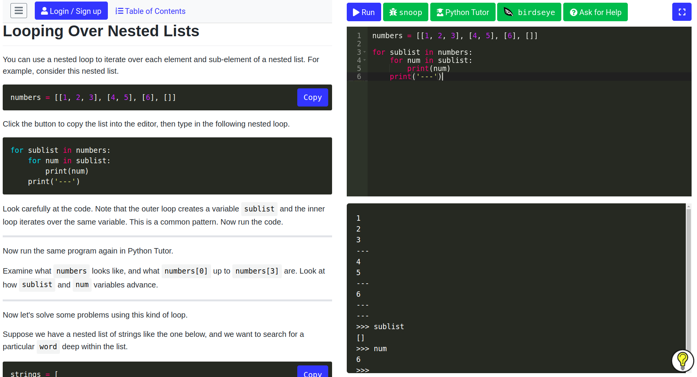
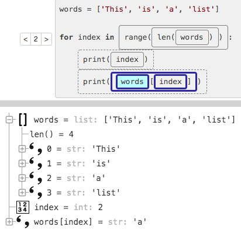
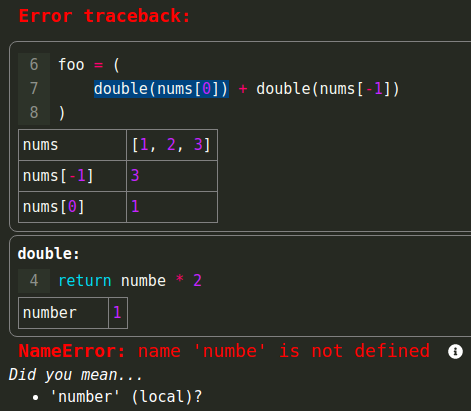
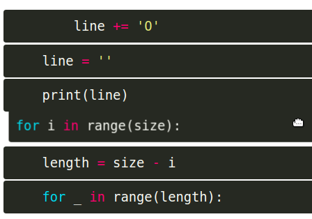
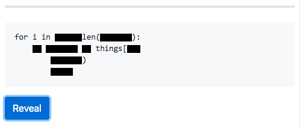

futurecoder
Pythonni noldan örganing.
Interaktiv örganişning yangi körinişi
100% bepul va oçiq kodli
Boşlovçilar uçun ğamxörlik bilan yaratilgan

Boşqalar nima deydi
Içkariga bir nazar taşlang!

Töliq interaktiv
Oldinga siljiş uçun foydalanuvçilar berilgan muharrir yoki konsolda kodni işga tuşirişi va savollarga javob berişi kerak.
Oson tuzatiş (debugging)
Bir marta bosiş bilan foydalanuvçilar bajarilişni vizuallaştiriş va muammolarni topiş uçun kuçli debaggerlarni işga tuşira oladi. Har biri öz afzalliklariga ega uçta debagger bor: Python Tutor, Snoop va Bird's Eye (rasmda).


Yaxşilangan xato xabarlari
Oddiy Python xato xabarlari (traceback) boşlovçilarni qörqitadi. futurecoder bu qörquvni yöqotib, ularni foydali qiladi.
Parsons masalalari
Agar öquvçi maşqni yeça olmay qolsa va barça maslahatlardan foydalanib bölgan bölsa, u aralaştirilgan yeçimni töğri tartibga solib körişi mumkin. Bu asabiylaşişni kamaytiradi va baribir öquvçini fikrlaşga undaydi.


Yeçimni bosqiçma-bosqiç oçiş
Oxirgi çora sifatida öquvçilar yeçimni asta-sekin oçib borişi mumkin, toki qolgan böşliqlarni özlari töldiriş uçun yetarli maʼlumotga ega bölgunlariça.
Bu imkoniyatlarning bir qismi xolos.
Batafsil maʼlumot uçun pastdagi videoni köring (inglizça) yoki
hoziroq boşlang!
Imkoniyatlar va afzalliklar namoyişini köring (inglizça):
Loyiha haqida
futurecoder — mutlaqo boşlovçilar Pythonda dasturlaşni mustaqil örganişi uçun bepul va oçiq kodli platforma va kurs.
futurecoderning uzoq muddatli maqsadlari katta:
- Informatika taʼlimida inqilob qiliş. Bizningça, hozirgi dasturlaşni örgatuvçi platformalar ança yaxşiroq bölişi mumkin.
- Har kim hissa qöşa oladigan va yaxşilay oladigan eng yaxşi örganiş manbasini yaratiş
- Kelib çiqişi yoki iqtidoridan qatʼi nazar, har kimga dasturlaşni mustaqil örganiş imkonini beriş
Bunga quyidagilar orqali erişmoqçimiz:
- Öquvçilar haqiqiy kod yozişni örganayotganda ularning qiziqişini saqlab qoliş
- Asabiylaşişning oldini oliş uçun foydalaniş oson bölgan kuçli vositalar taqdim etiş
- Birinçi örganiş uçun eng yaxşi til hamda real ilovalarda eng maşhur til deb keng tan olingan Pythonni örgatiş.
- Oçiq kodli loyiha sifatida doimiy takomillaştiriş
Bu heç qaçon tugamaydigan loyiha. Bu saytni yanada kattaroq va yaxşiroq qiliş uçun köp iş qiliş kerak. Har qanday yordam kerak va juda qadrlanadi!